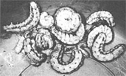
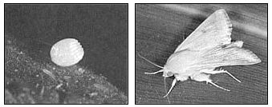

BACKYARD JUNGLE
Here's the 18th in a series of articles that will help you tell friend from foe in your garden.
If you raise sweet corn, you more than likely know about the corn earworm ( Heliothis zea ) - the caterpillar of a tan-colored noctuid moth common throughout North and South America. This voracious field-crop and garden pest grows to about an inch and a half in length and comes in a variety of colors, with green, yellow, pink, reddish brown, and dark gray forms occurring simultaneously. The earworm is most destructive to corn, tomatoes, and cotton, but also attacks tobacco, beans, peas, peppers, squash, and other cultivated plants.
The small, white moth eggs that produce the earworm are often deposited directly on the silks of corn ears, putting the newly hatched caterpillars in position to burrow immediately through the silks and into the tops of the ears (often leaving a telltale hole). In addition to tunneling into the ears, noctuid caterpillars sometimes attack the leaf whorls of young corn plants. On tomatoes, earworms feed initially on the foliage and save the juicy fruits for dessert.
The larval stage lasts about two weeks in the case of earworms hatched in summer, and a month or more for those that emerge in spring and fall. This allows time for one or two generations to occur annually in northern regions, while four to seven generations can be completed in the South. After the larvae attain full growth, they burrow into the soil to a depth of between one and seven inches. Here they pupate - a state that can be as brief as two weeks in the summer or as lengthy as six months during winter hibernation.
Adult noctuid moths can sometimes be seen at dusk hovering about flowers in search of nectar. Each female lays about 1,000 eggs in her short lifetime, and under ideal conditions may produce as many as 3,000. Fortunately, many natural controls are at work to offset this phenomenal reproductive capacity: Birds, toads, spiders, and numerous predatory insects inflict a heavy toll on the earworm population; the minute Trichogramma wasp is an important parasite; and the earworm helps control itself through cannibalism (especially in severely infested corn ears).
The most effective active earworm control measures vary according to the species of plant being attacked. On most garden plants other than corn, earworms surface-feed and therefore are visible during the early stages of their lives, making them easy targets for plucking and crushing by hand. Additionally, the bacterial pesticide Bacillus thuringiensis (BT) can be applied periodically before the larvae start burrowing. A virus marketed (by Sandoz, Inc.) as Elcar can also be used on exposed earworms.
With corn, control is a bit more tricky since the earworms are hidden almost from the moment they're hatched. However, approaches other than hand-crushing and surface-treating are available. To begin with, you can plant those varieties of corn that are resistant to earworm invasion - such as Country Gentleman, Iona, Aristogold, Seneca Scout, and Seneca Chief. Then there's the traditional method of corn earworm control that involves placing a few drops of mineral oil at the top of each corn ear where the silk emerges. (Caution: This treatment may cause damage to some varieties of corn during hot, dry weather. Consequently, I'd test the oil treatment on a few ears before getting too carried away with it.)
There are a lot of companies that spend big bucks every year trying to convince us that we have to buy something in order to control pests in our gardens. While this may be so in some cases, I can knock down an earworm infestation with my bare hands in less time than it takes to read the instructions and warnings on a can of your typical bug blaster. How? After the silks on my corn are dried (or nearly so), I pull the sheath from around the tip of each ear and remove and destroy any worms. Afterwards, I pull the sheath back together tightly to discourage other invaders, and secure it with a long twist-tie. When the ear is ready to harvest, I simply cut of the worm-damaged area - which is usually confined to the tip.
If you live north of Tennessee and east of the Rockies, you might very well have encountered another variety of earworm, the European corn borer ( Ostrinia nubilalis ). This grayish pink caterpillar begins its feeding life by attacking corn leaf whorls, but eventually gets around to boring into the stalks and ears. Early planting and the use of corn types that are resistant to the European borer - such as Stowell's Evergreen, Butter, Sugar, Bellringer, and Wonderful varieties - are the safest and most effective ways to control this unwelcome immigrant. Early applications of BT are also effective, but the pesticide must be repeated every seven to ten days, with the first few sprayings directed at the whorls and later treatments applied to the ears, tassels, and leaf axils.
There's no denying that growing your own sweet corn brings on a fair share of pest problems, but the end product is more than worth the effort.
|
 It took only a few minutes work to net this catch of earworms from the author's corn patch. |
 The tiny egg of the corn earworm may be laid directly on its victim plant. The noctuid moth that grows from the corn earworm caterpillar is often referred to as the Miller Moth. |
|